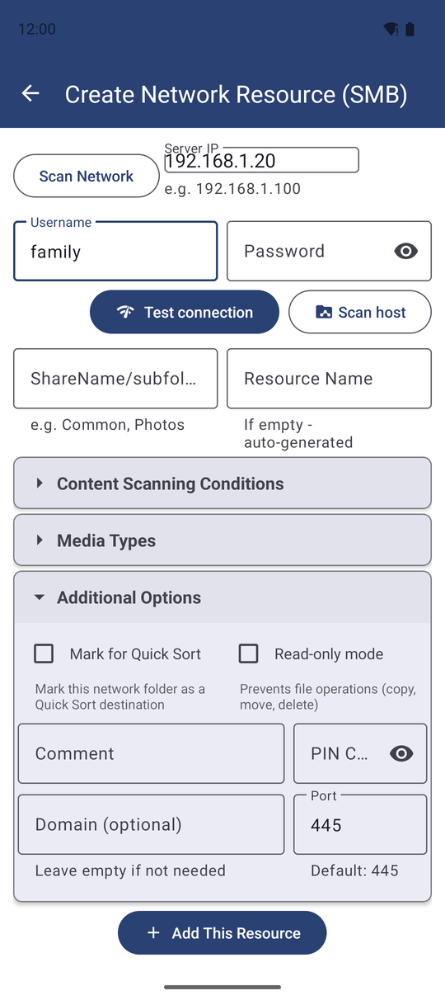
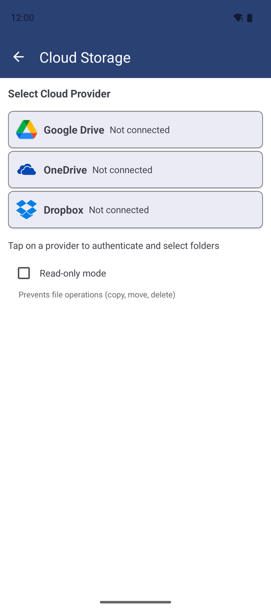
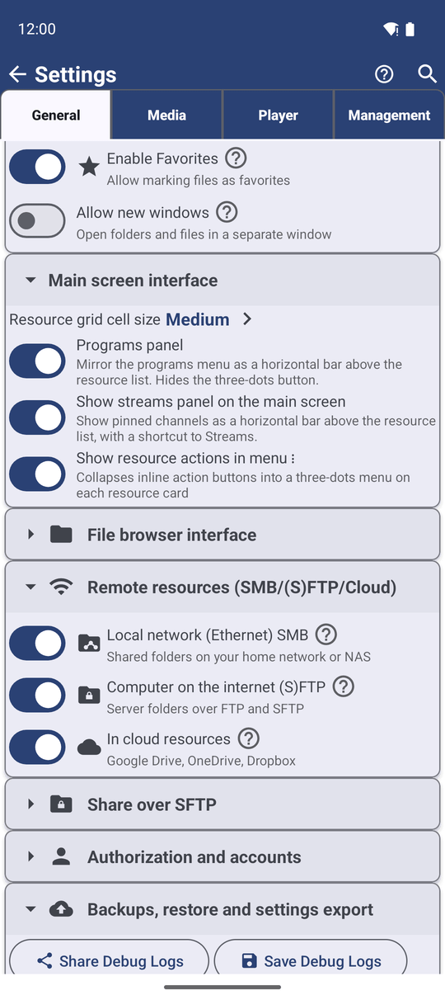

Додавання мережевих папок і хмарних сховищ як джерел
Додайте спільну папку на домашньому комп'ютері чи NAS, сервер FTP або SFTP, або папку Google Drive, Dropbox чи OneDrive як ресурс, вимикайте цілі групи джерел і дозвольте кешу застосунку тримати їх швидкими.
Чому вам це сподобається
Сімейний фотоархів лежить на старому комп'ютері у вітальні, фільми - на NAS у коридорі, а минулорічні фото поїхали на Google Drive. Копіювати все це на телефон, щоб переглянути чи розкласти по місцях, не потрібно. Додайте кожне місце один раз як ресурс - і воно відкриється так само просто, як будь-яка папка на телефоні.
Ця сторінка - огляд: які місця можна додати і що застосунок робить, щоб вони працювали швидко. Покрокове налаштування кожного типу сервера - на власній сторінці, посилання на які наведено нижче.
- ✓ Мережеві папки та сервери FTP або SFTP: будь-яка редакція, крім Lite. Хмарні сховища: Standard, noLegal, Photos, Legacy і VR - не Lite і не FOSS. Див. Сім редакцій застосунку.
- ✓ Для мережевої папки: телефон і комп'ютер чи NAS в одній мережі Wi-Fi, а також ім'я користувача та пароль спільної папки.
- ✓ Для сервера FTP або SFTP: його адреса та ім'я користувача з паролем або SSH-ключем.
- ✓ Для хмарного сховища: обліковий запис Google, Dropbox або Microsoft.
Додайте спільну папку з домашньої мережі
На головному екрані торкніться Додати, потім Мережева папка - «Додати SMB мережеві ресурси». Екран Створення мережевого ресурсу (SMB) запитує:
- IP сервера, наприклад
192.168.1.100. Не знаєте адреси? Торкніться кнопки сканування мережі і оберіть свій комп'ютер або NAS зі списку знайдених пристроїв. - Ім'я користувача і Пароль спільної папки, а також Домен, лише якщо ваша мережа його використовує («Залиште порожнім, якщо не потрібно»).
- Порт - лишіть
445, якщо адміністратор не сказав інакше.
Торкніться Сканувати хост, щоб отримати список спільних папок на цьому комп'ютері, позначте потрібні й додайте їх. Тест з'єднання перевіряє ім'я та пароль, нічого не додаючи. Повний покроковий розбір, включно з тим, як розшарити папку на Windows, - у розділі Підключення спільних папок SMB/Windows.

Додайте папку на сервері FTP або SFTP
Торкніться Додати, потім SFTP / FTP. На екрані Додати S/FTP ресурс оберіть SFTP або FTP вгорі - порт підставиться сам (22 для SFTP, 21 для FTP). Введіть Хост, Ім'я користувача та шлях до папки, наприклад /home/user/media або просто /.
Для SFTP можна увійти за Паролем або за SSH-ключем: вставте ключ або торкніться Завантажити, і за потреби додайте парольну фразу ключа. Торкніться Перевірити з'єднання, потім Додати ресурс. Докладніше в Підключення серверів SFTP і FTP.
Додайте папку Google Drive, Dropbox або OneDrive
Торкніться Додати, потім Хмарне сховище - «Натисніть на сервіс для входу та вибору папок». Торкніться Google Drive, Dropbox або OneDrive, увійдіть у свій обліковий запис у вікні, що відкриється, і оберіть хмарну папку, яку хочете бачити в застосунку.
Кожна обрана папка стає окремим ресурсом. Подробиці про кожен сервіс - у розділах Інтеграція з Google Drive і Dropbox та OneDrive.

Сховайте цілу групу місць на певний час
Якщо ви взагалі не користуєтеся мережевими чи хмарними місцями або хочете сховати їх на час поїздки, вимкніть їх цілою групою. Відкрийте Налаштування, вкладку Загальні і знайдіть Віддалені ресурси (SMB/(S)FTP/Хмара). Там є три перемикачі:
- Локальна мережа (Ethernet) SMB - спільні папки домашньої мережі або NAS.
- Комп'ютер в інтернеті (S)FTP - папки серверів через FTP і SFTP.
- У хмарних ресурсах - Google Drive, OneDrive, Dropbox.
Коли ви вимикаєте групу, маючи ресурси такого типу, застосунок питає «Сховати ці папки?» і пояснює: вони ховаються, а не видаляються. Вони повернуться з усіма своїми налаштуваннями, щойно ви знову увімкнете перемикач. Поки група вимкнена, її картка також зникає з екрана додавання ресурсу.

Чому мережеві папки відкриваються швидко вдруге
Застосунок сам робить три речі, щоб мережеві й хмарні місця відчувалися майже так само швидко, як телефон:
- Він пам'ятає список файлів. Коли ви знову відкриваєте мережеву папку, її файли з'являються одразу, поки застосунок тихо перевіряє сервер на зміни у фоновому режимі.
- Він зберігає невеликі перегляди. Мініатюри мережевих і хмарних файлів зберігаються на телефоні, тож плитки не завантажуються заново щоразу. Для папки з понад 10 000 файлів застосунок сам вимикає перегляди і показує замість них значки типів файлів; це можна змінити опцією Вимкнути мініатюри в налаштуваннях ресурсу.
- Він зберігає копію для відтворення, коли стримінг неможливий. Деякі сервери не вміють надсилати відео частинами. Тоді застосунок спочатку завантажує його в кеш стримінгу, щоб відео йшло плавно і могло відновитися після втрати з'єднання.
Виберіть, як довго зберігається кеш стримінгу
Відкрийте Налаштування, вкладку Загальні і знайдіть Фонова синхронізація, мережа й кеш:
- Термін зберігання кешу стримінгу - як довго зберігається закешований файл після останнього відтворення: Вимк., 1 день, 3 дні, 7 днів або 30 днів. Старіші копії видаляються самі.
- Очищення кешу стримінгу - що відбувається, коли ви виходите з плеєра: Запитувати щоразу, Видаляти автоматично або Зберігати автоматично.
- Очистити кеш стримінгу - видаляє всі закешовані копії негайно. Підтвердження показує, скільки місця звільниться. Якщо нічого очищати, застосунок повідомляє «Кеш стримінгу порожній. Нічого не закешовано - нічого не втрачено.».
Перехід на новий телефон
Коли ви переходите на новий телефон вбудованим перенесенням Android «копіювання застосунків і даних», ваші входи в Google Drive і Dropbox переносяться разом з ним. Під час першого запуску на новому телефоні ці хмарні ресурси просто відкриваються - без жодних повідомлень і зайвих дій.
OneDrive зберігає вхід у місці, яке застосунок не може скопіювати, тож на новому телефоні потрібно ввійти в OneDrive ще раз. Якщо ви вийшли з облікового запису сервісу на старому телефоні перед переходом, цей сервіс також не перенесеться.
Що ви отримаєте
Комп'ютер у вітальні, NAS і ваші хмарні папки розташовані на головному екрані поруч із власними папками телефону. Списки відкриваються миттєво, перегляди з'являються без очікування, а скільки місця займає кеш стримінгу - вирішуєте ви.
Поради та усунення несправностей
- Повільна спільна папка відновлюється вчасно. Коли з'єднання SMB починає давати збої під час одночасного завантаження кількох файлів, застосунок помічає кожен тайм-аут і перепідключається саме тоді, коли потрібно, замість того щоб пропускати частину з них.
- Неправильний шлях SFTP так і скаже. Ресурс SFTP, чия папка більше не існує на сервері, показує просте повідомлення «не знайдено» замість загальної помилки.
- Червоний або недоступний мережевий ресурс зазвичай означає, що комп'ютер заснув або телефон вийшов з домашньої мережі Wi-Fi. Розбудіть комп'ютер і потягніть список вниз, щоб оновити.
- Усе за один перехід на новий телефон. Крім автоматичного входу в хмару, ви можете перенести всі ресурси, включно з мережевими паролями, у файлі резервної копії - див. Спільний доступ і резервне копіювання ресурсів.
- Копіювання між телефоном і мережею працює в обидва боки - див. Копіювання, переміщення і видалення файлів.